寒假的第一场训练补题。全英文的题欸，，，看懂题意都费劲QAQ
本次比赛罚时离谱，主要是犯同一个错误次数太多：没开long long，，，麻了
A - Knapsack for All Segments
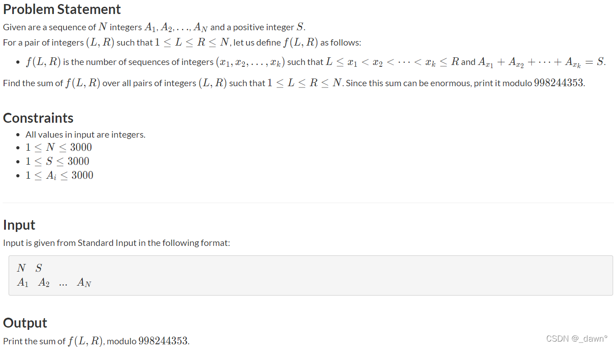
主要意思是说给出序列A，给出一个正整数S，在每一个区间中一共有多少子区间的和为S。
思路 ：参考 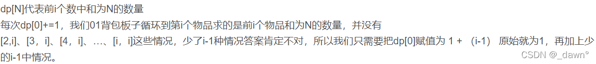
AC代码：
1 2 3 4 5 6 7 8 9 10 11 12 13 14 15 16 17 18 19 20 21 22 23 24 25 26 27 28 29 30 31 #include <bits/stdc++.h> using namespace std;typedef long long ll;#define ios ios::sync_with_stdio(false);cin.tie(0);cout.tie(0); #define INF 0x3f3f3f3f const int mod=998244353 ;const int N=3e3 +5 ;int n,s;int a[N];ll ans,f[N]; int main () cin>>n>>s; for (int i=1 ;i<=n;i++) cin>>a[i]; for (int i=1 ;i<=n;i++) { f[0 ]+=1 ; for (int j=s;j>=a[i];j--) f[j]=(f[j]+f[j-a[i]])%mod; ans=(ans+f[s])%mod; } cout<<ans<<'\n' ; return 0 ; }
os：DP好难想QWQ
B - Dividing Chocolate
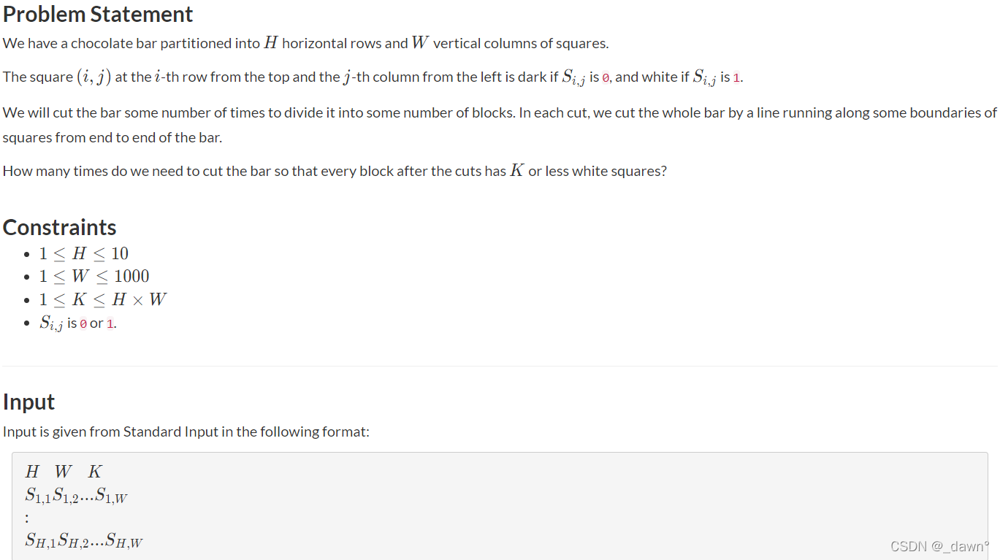
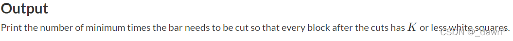
思路 ：H的范围很小，直接暴力枚举横切的情况，再贪心竖切。对于枚举横切时，我们可以用0代表不切，1代表切，用__builtin_popcount()计算有多少个位为1。参考代码解释很详细
AC代码：
1 2 3 4 5 6 7 8 9 10 11 12 13 14 15 16 17 18 19 20 21 22 23 24 25 26 27 28 29 30 31 32 33 34 35 36 37 38 39 40 41 42 43 44 45 46 47 48 49 50 51 52 53 54 55 56 #include <bits/stdc++.h> using namespace std;typedef long long ll;#define ios ios::sync_with_stdio(false);cin.tie(0);cout.tie(0); #define INF 0x3f3f3f3f const int mod=1e9 +7 ;int h,w,k;string s[12 ]; int main () cin>>h>>w>>k; for (int i=0 ;i<h;i++) cin>>s[i]; int ans=INF; for (int l=0 ;l<(1 <<(h-1 ));l++) { int x=__builtin_popcount(l); int r[x+1 ]={0 }; int flag=1 ,cnt=x; for (int j=0 ;j<w;j++) { int c[x+1 ]={0 }; int p=0 ,maxn=0 ; for (int i=0 ;i<h;i++) { c[p]+=s[i][j]-'0' ; maxn=max (maxn,c[p]); if (l&(1 <<i)) p++; } if (maxn>k) { flag=0 ; break ; } maxn=0 ; for (int i=0 ;i<=x;i++) maxn=max (maxn,r[i]+c[i]); if (maxn>k) { memset (r,0 ,sizeof (r)); cnt++; } for (int i=0 ;i<=x;i++) r[i]+=c[i]; } if (flag) ans=min (ans,cnt); } cout<<ans<<'\n' ; return 0 ; }
os：二进制处理问题，这种想法没怎么用过欸
C - Maximum Volume
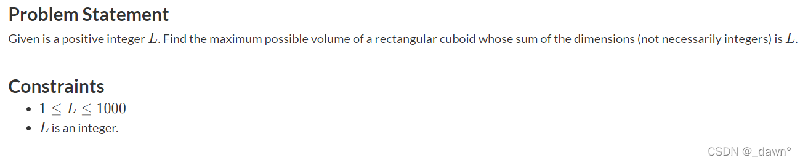
主要意思是说给出一个正整数L，是长方体长宽高的和，问组成的长方体最大体积是多少。
思路 ：当n个数和一定时，每个数相等时，n个数的积最大。
AC代码：
1 2 3 4 5 6 7 8 9 10 11 12 13 14 15 16 17 18 19 20 21 #include <bits/stdc++.h> using namespace std;typedef long long ll;#define ios ios::sync_with_stdio(false);cin.tie(0);cout.tie(0); #define INF 0x3f3f3f3f const int mod=1e9 +7 ;int l;int main () cin>>l; double a=(double )l/3.0 ; printf ("%.7lf\n" ,a*a*a); return 0 ; }
os：这个题还WA了一发，因为多输出东西了。
D - String Palindrome
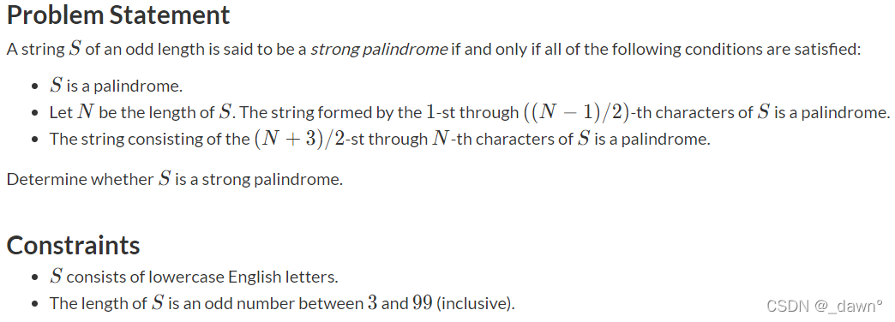
主要意思是说判断一个字符串是否是强回文串，满足以下三个条件的是强回文串。
思路 ：主要用的substr()函数，还有resreve()函数。
AC代码：
1 2 3 4 5 6 7 8 9 10 11 12 13 14 15 16 17 18 19 20 21 22 23 24 25 26 27 28 29 30 31 32 33 #include <bits/stdc++.h> using namespace std;typedef long long ll;#define ios ios::sync_with_stdio(false);cin.tie(0);cout.tie(0); #define INF 0x3f3f3f3f const int mod=1e9 +7 ;bool pan (string s) string a=s; reverse (s.begin (),s.end ()); string b=s; if (a==b) return true ; else return false ; } int main () string s; cin>>s; int len=s.length (); string m=s.substr (0 ,(len-1 )/2 ); string n=s.substr ((len+3 )/2 -1 ,len-(len+3 )/2 +1 ); if (pan (s)&&pan (m)&&pan (n)) cout<<"Yes" <<'\n' ; else cout<<"No" <<'\n' ; return 0 ; }
os：前几天打cf学到的函数就用上了：P
E - Banned K
主要意思是说从k=1开始一直到k=n，对于数列每次去掉a[k]一个元素，剩下的元素可以选出多少对大小相等的数。
思路 ：遍历数组，将每个元素有多少统计一下，对于1,1,1，一共有3种选法，即2+1，推广来说，就是对于一个有n个的元素，种类数为1+2+…+(n-1)。
AC代码：
1 2 3 4 5 6 7 8 9 10 11 12 13 14 15 16 17 18 19 20 21 22 23 24 25 26 27 28 29 30 31 32 33 34 35 36 37 38 39 40 41 42 43 44 45 #include <bits/stdc++.h> using namespace std;typedef long long ll;#define ios ios::sync_with_stdio(false);cin.tie(0);cout.tie(0); #define INF 0x3f3f3f3f const int mod=1e9 +7 ;const int N=2e5 +5 ;ll n; ll a[N],cnt[N],c[N],flag[N]; int main () cin>>n; for (ll i=1 ;i<=N-2 ;i++) { if (i==1 ) c[i]=1 ; else c[i]=c[i-1 ]+i; } ll ans=0 ; for (ll i=1 ;i<=n;i++) { cin>>a[i]; cnt[a[i]]++; } for (ll i=1 ;i<=n;i++) { if (!flag[a[i]]) { ans+=c[cnt[a[i]]-1 ]; flag[a[i]]=1 ; } } for (ll i=1 ;i<=n;i++) { cout<<ans-cnt[a[i]]+1 <<'\n' ; } return 0 ; }
os：多做题多练的一大原因我觉得是在很多细节处理上会轻松一些。没开long longWA了一发。
F-Multiple of 2019
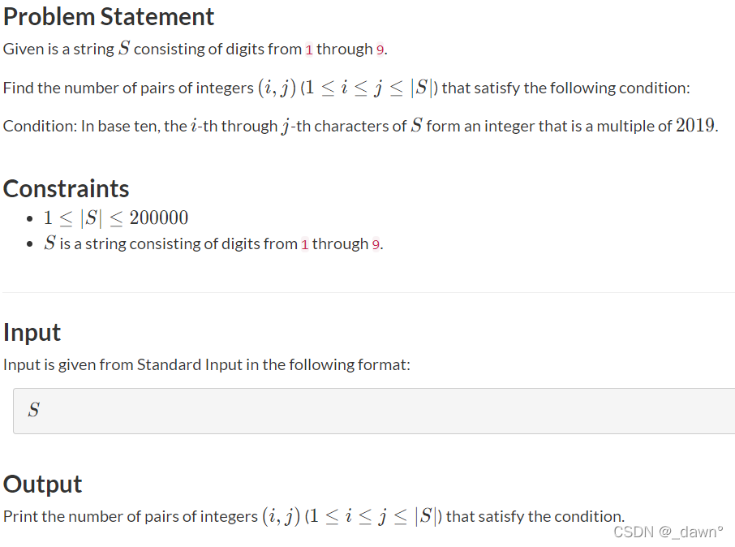
主要意思是说有一个S长度的字符串，仅由1~9组成，问字符串中有多少区间表示的十进制数是2019的倍数。
思路 ：用到同余方程。若x，y关于2019同余，那么可以写成x=a2019+d，y=b 2019+d，则（x-y）%2019=0，那么就从后向前判断有多少区间满足[l,r]与L,r ，使得两区间关于2019同余。
AC代码：
1 2 3 4 5 6 7 8 9 10 11 12 13 14 15 16 17 18 19 20 21 22 23 24 25 26 27 28 29 30 31 32 33 #include <bits/stdc++.h> using namespace std;typedef long long ll;#define ios ios::sync_with_stdio(false);cin.tie(0);cout.tie(0); #define INF 0x3f3f3f3f const int mod=1e9 +7 ;string s; ll ans,cnt,tmp; vector<ll>vec (2019 ); int main () cin>>s; vec[0 ]=1 ; int len=s.length (); cnt=1 ; reverse (s.begin (),s.end ()); for (int i=0 ;i<len;i++) { tmp=(tmp+(s[i]-'0' )*cnt)%2019 ; ans+=vec[tmp]; vec[tmp]++; cnt=cnt*10 %2019 ; } cout<<ans<<'\n' ; return 0 ; }
G-A Simple Problem with Integers
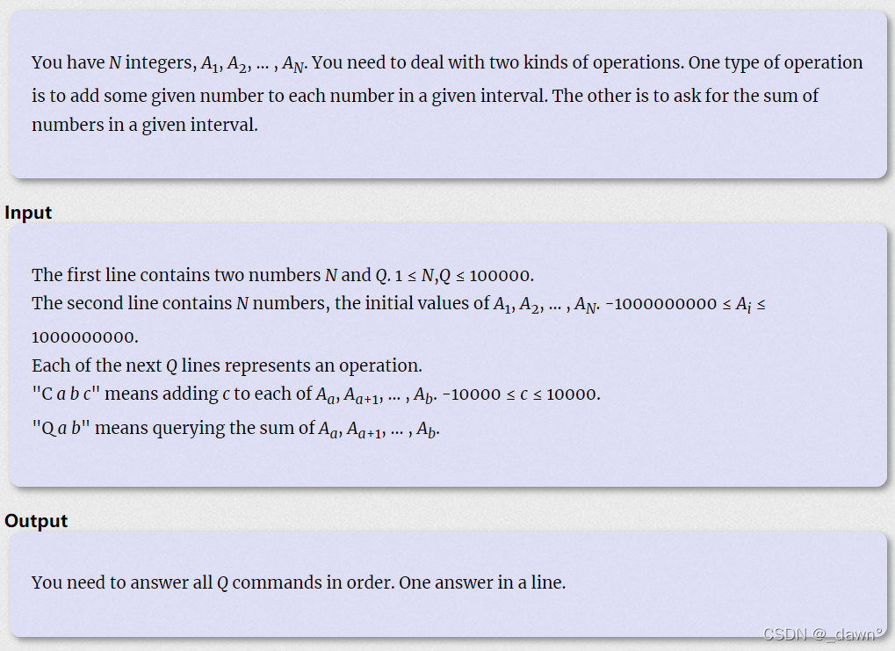
主要意思是，，，别了，树状数组板子题。
思路 ：一维树状数组的区间修改，区间查询。
AC代码：
1 2 3 4 5 6 7 8 9 10 11 12 13 14 15 16 17 18 19 20 21 22 23 24 25 26 27 28 29 30 31 32 33 34 35 36 37 38 39 40 41 42 43 44 45 46 47 48 49 50 51 52 53 54 55 56 57 58 59 60 61 62 63 64 65 66 67 68 69 70 71 72 73 74 75 76 77 78 79 80 81 82 #include <iostream> #include <cstdio> #include <algorithm> #include <stack> #include <vector> #include <map> #include <queue> #include <cstring> #include <cmath> #include <set> #include <iterator> #include <numeric> using namespace std;typedef long long ll;#define ios ios::sync_with_stdio(false);cin.tie(0);cout.tie(0); #define INF 0x3f3f3f3f const int mod=1e9 +7 ;const int N=1e5 +10 ;ll n,p; ll sum1[N],sum2[N],a[N]; ll lowbit (ll x) return x&-x; } void update (ll pos,ll x) ll tmp=pos; while (pos<=n) { sum1[pos]+=x; sum2[pos]+=x*(tmp-1 ); pos+=lowbit (pos); } } ll query (ll x) ll tot1=0 ,tot2=0 ,tmp=x; while (x) { tot1+=sum1[x]; tot2+=sum2[x]; x-=lowbit (x); } return tot1*tmp-tot2; } int main () scanf ("%lld%lld" ,&n,&p); for (ll i=1 ;i<=n;i++) { scanf ("%lld" ,&a[i]); update (i,a[i]-a[i-1 ]); } while (p--) { char p; cin>>p; if (p=='Q' ) { ll l,r; scanf ("%lld%lld" ,&l,&r); printf ("%lld\n" ,query (r)-query (l-1 )); } else if (p=='C' ) { ll l,r,w; scanf ("%lld%lld%lld" ,&l,&r,&w); update (l,w); update (r+1 ,-w); } } return 0 ; }
os：板子题WA了好多次，因为没开long long。
H - Networking
思路 ： 最小生成树板子题，kruskal做法。
AC代码：
1 2 3 4 5 6 7 8 9 10 11 12 13 14 15 16 17 18 19 20 21 22 23 24 25 26 27 28 29 30 31 32 33 34 35 36 37 38 39 40 41 42 43 44 45 46 47 48 49 50 51 52 53 54 55 56 57 58 59 60 61 62 63 64 #include <bits/stdc++.h> using namespace std;typedef long long ll;#define ios ios::sync_with_stdio(false);cin.tie(0);cout.tie(0); #define INF 0x3f3f3f3f const int mod=1e9 +7 ;const int N=2555 ;int n,m,ans;int fa[N];struct Edge { int x,y,len; bool operator <(const Edge &a) { return len<a.len; } } e[N]; void init () for (int i=1 ;i<=n;i++) fa[i]=i; } int getfa (int x) return fa[x]==x?x:fa[x]=getfa (fa[x]); } void merge (int x,int y) int xx=getfa (x); int yy=getfa (y); fa[xx]=yy; } int main () while (cin>>n,n) { cin>>m; init (); for (int i=1 ;i<=m;i++) cin>>e[i].x>>e[i].y>>e[i].len; sort (e+1 ,e+1 +m); ans=0 ; for (int i=1 ;i<=m;i++) { if (getfa (e[i].x)!=getfa (e[i].y)) { ans+=e[i].len; merge (e[i].x,e[i].y); } } cout<<ans<<'\n' ; } return 0 ; }
J - Base K
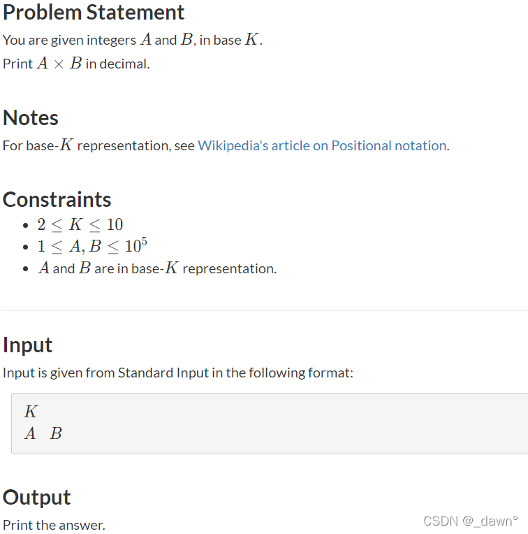
主要意思是给出K进制的两个数，求这两个数在十进制下的乘积。
思路 ： 进制转换，开long long。
AC代码：
1 2 3 4 5 6 7 8 9 10 11 12 13 14 15 16 17 18 19 20 21 22 23 24 25 26 27 28 29 30 31 32 33 34 35 36 37 38 39 40 41 42 43 44 45 46 47 #include <bits/stdc++.h> using namespace std;typedef long long ll;#define ios ios::sync_with_stdio(false);cin.tie(0);cout.tie(0); #define INF 0x3f3f3f3f const int mod=1e9 +7 ;ll k,a,b; ll pmod (ll a,ll b) ll res=1 ; while (b) { if (b%2 ) res=res*a; b/=2 ; a=a*a; } return res; } ll func (ll n,ll l) ll d=0 ,i=0 ,r; ll ans=0 ; while (n) { r=n%10 ; ans+=r*pmod (l,i++); n/=10 ; } return ans; } int main () cin>>k; cin>>a>>b; ll cnt=func (a,k)*func (b,k); cout<<cnt<<'\n' ; return 0 ; }
K - Long Sequence
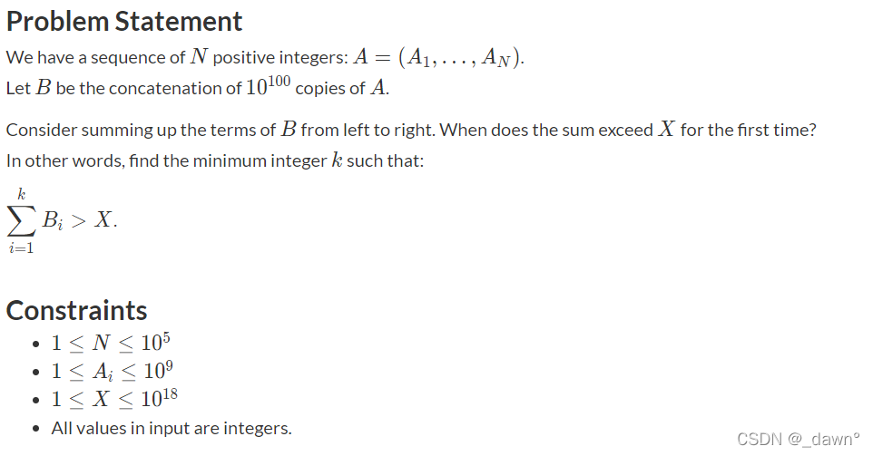
主要意思是说给出序列A，序列B是序列A的很多次复制，给出一个值X，问序列B中前多少项和大于X。
思路 ： 如果直接把序列B遍历相加的话会TLE，那就先求序列A的和，把X模这个和的结果对A数组遍历求即可。
AC代码：
1 2 3 4 5 6 7 8 9 10 11 12 13 14 15 16 17 18 19 20 21 22 23 24 25 26 27 28 29 30 31 32 33 34 35 36 37 38 39 #include <bits/stdc++.h> using namespace std;typedef long long ll;#define ios ios::sync_with_stdio(false);cin.tie(0);cout.tie(0); #define INF 0x3f3f3f3f const int mod=1e9 +7 ;const int N=1e5 +5 ;int n;ll x,a[N]; int main () scanf ("%d" ,&n); ll tt=0 ; for (int i=1 ;i<=n;i++) { scanf ("%lld" ,&a[i]); tt+=a[i]; } scanf ("%lld" ,&x); ll ans=0 ,j; for (int i=1 ;i<=n;i++) { ans+=a[i]; if (ans>x%tt) { j=i; break ; } } cout<<x/tt*n+j<<'\n' ; return 0 ; }
os：做题方法取决于数据大小！
L - 迷宫问题
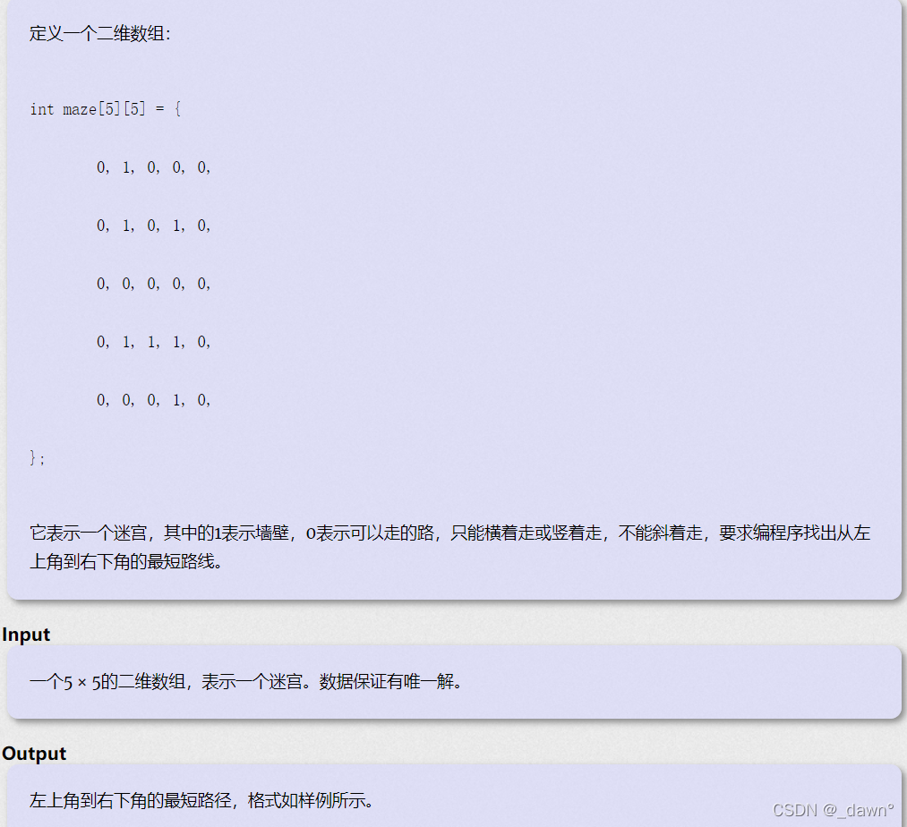
做过的原题了，属于记录路径的BFS，代码指路 传送门
If you like this blog or find it useful for you, you are welcome to comment on it. You are also welcome to share this blog, so that more people can participate in it. If the images used in the blog infringe your copyright, please contact the author to delete them. Thank you !
 编辑 主要意思是说有一块给出长宽的巧克力，白色为1，黑色为0，每次选择一行一列横切竖切，（切是从开始一直切到头)，求切多少刀可以满足每块巧克力上的白色部分小于等于所给值。
编辑 主要意思是说有一块给出长宽的巧克力，白色为1，黑色为0，每次选择一行一列横切竖切，（切是从开始一直切到头)，求切多少刀可以满足每块巧克力上的白色部分小于等于所给值。